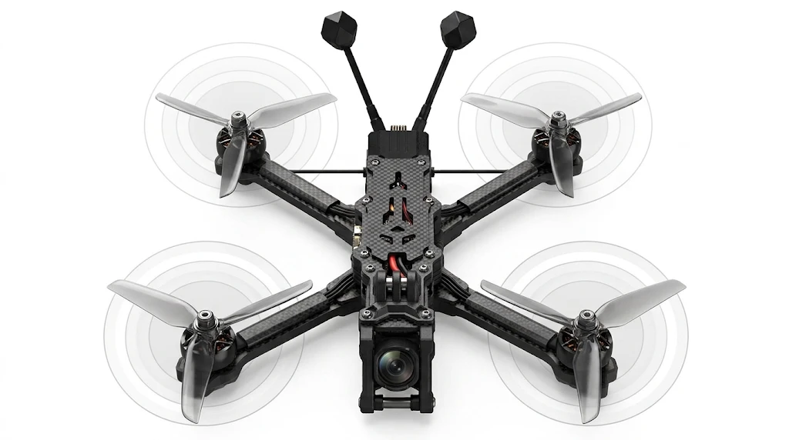

Deine Flüge im Vergleich
Lade das Blackbox-Log deiner Drohne hoch. Du siehst, wie Akku, Motoren und Vibrationen von Flug zu Flug abschneiden.
- 1Log hochladenCSV-Datei aus dem Betaflight Blackbox Explorer
- 2Flüge auswählenMehrere anklicken, um sie zu vergleichen
- 3Auswertung ansehenTippe auf ein Teil der Drohne oder wähle einen Reiter

Deine Flüge
Tippe Flüge an, um sie zu vergleichen. Du kannst mehrere auswählen.
Auswertung
Wähle einen Reiter. Die Kurven zeigen immer die oben ausgewählten Flüge.